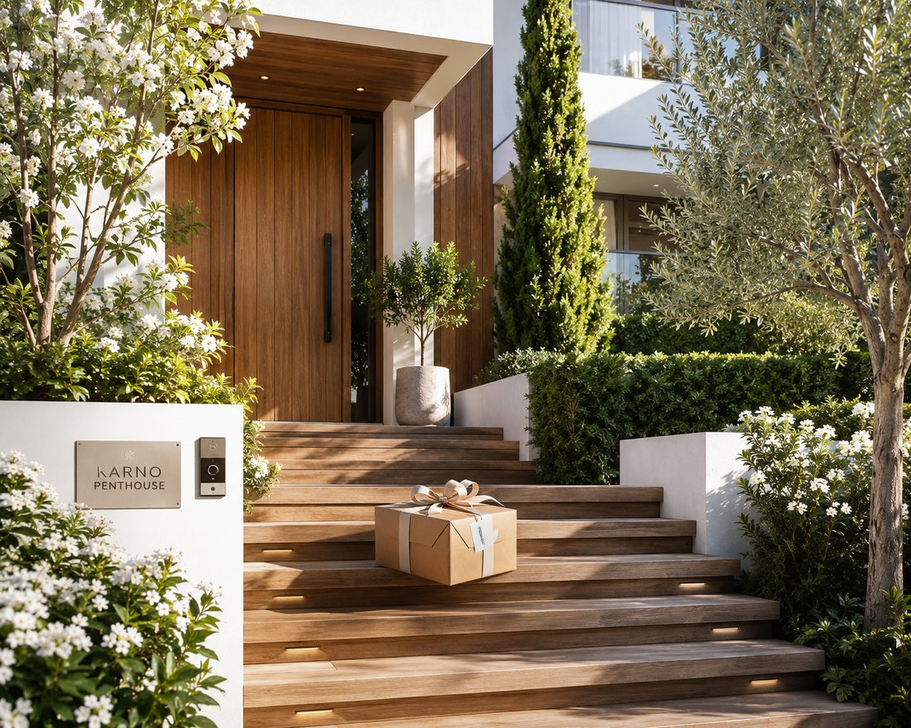

Delivered
Your parcel arrived at 10:07.
Proof of delivery ▸ photo from the operator (RJ-C4)

Details ▸ where · when · who
Delivered toOsokorky, 14
Time10:07
OperatorAndriy M.
Delivered
Your parcel arrived at 10:07.
Proof of delivery ▸ photo from the operator (RJ-C4)

Details ▸ where · when · who